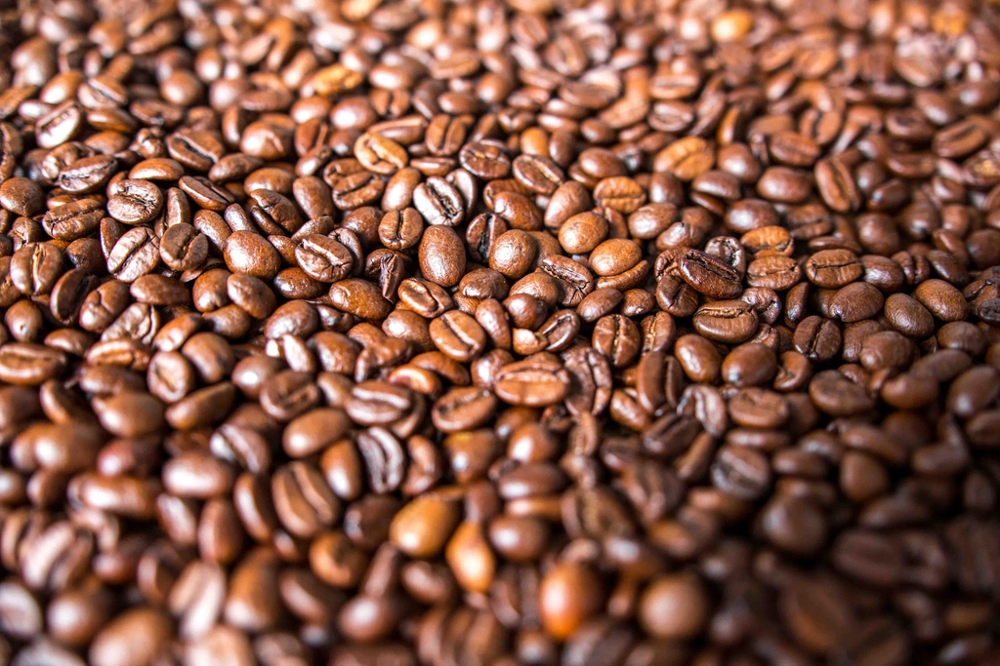

Concept
Flat9の世界観
Flat9(フラットナイン)という名前には、ジャズでよく使われる、少し緊張感をともなう響きが重なります。
そのどこか背筋の伸びるような響きを、Flat9cafeでは「落ち着いた大人の時間」として空間にうつしています。
静かなジャズと控えめな灯りの中で、いつもより少しだけ特別な時間をお過ごしください。

01
♭音楽が流れる時間
店内にはいつもジャズが静かに流れています。会話を邪魔しない音量で、でも耳を澄ませば指先の動きまで感じられるような選曲。
レコードに針を落とすような、少し特別な一日の始まりや終わりに寄り添う時間をご用意しています。

02
♭一人の時間、少人数の時間
Flat9cafeがいちばん大切にしているのは、一人でゆっくり過ごす時間です。
本を読む、考えごとをする、何もせずぼんやりする――そんな一人の時間を心地よく過ごしていただける席をご用意しています。もちろん、気の合う友人や少人数での来店も歓迎です。声のボリュームを落として語らえる、落ち着いた空気の中でお過ごしください。

03
♭コーヒーへのこだわり
一杯一杯、丁寧に抽出したコーヒーをご提供します。
豆の産地や焙煎方法など、より詳しいこだわりについては、現在情報を整理中です。詳細は店舗までお問い合わせください。
♭ご予約・お問い合わせ
お電話・Instagram・Googleマップから、お気軽にどうぞ。